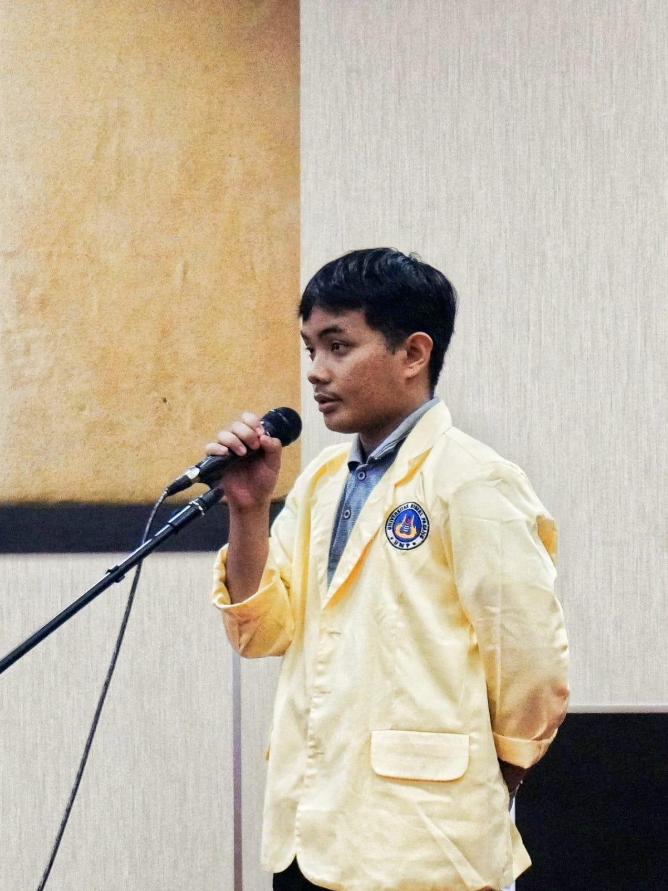

Welcome To My Portofolio Website
Saya Mahasiswa Program Studi Pendidikan Bahasa Inggris di Universitas Negeri Padang yang memiliki ketertarikan terhadap keuangan, pasar modal, keamanan siber, dan AI. Lifelong Learner yang berfokus terhadap finance, technology, and self development di era digital.
Saya aktif berpartisipasi dalam webinar dan seminar untuk menambah wawasan saya, terutama di bidang pendidikan, bisnis, keuangan, pasar modal, keamanan siber, dan AI. Sebagai Co-Founder BMF Creative dan Builder BM.AI | Finance AI Assistant, saya menggabungkan kemampuan desain dengan strategi edukasi, teknologi, AI, dan komunikasi yang efektif.
2024 - Present
Padang, Sumbar
BMF Creative
2021 - 2026
Sawahlunto, Sumbar
Automotive Community Media
2020 - Present
Sawahlunto, Sumbar
BIMA FRUITY SHOP
IDX Certified Capital Market School (SPM)
Google Certified of Productivity Master Class with Madani Scholar
UNP Certified of Seminar Festival Economic
UNP Certified Kegiatan Pembekalan KKN oleh Menteri Koordinator Pemberdayaan Masyarakat
Dwijendra University Certified Innovation and Issues on English Language Teaching in The Digital Transformation Era
Jadi Hacker Certified of Zero Day Defense : Inside the SOC War Room
Certified of Seminar of Building a Future: Career and Higher Education Pathways. Organized by English Department, The Faculty of Languanges and Arts. Padang State University
MAN Kota Sawahlunto (2022 - 2025)
High School Diploma, Natural Science Major
Universitas Negeri Padang (2025 - Present)
Bachelor of Education, English/Language Arts Teacher Education
Tertarik untuk berbincang atau sekadar menyapa? Jangan ragu untuk menghubungi saya.